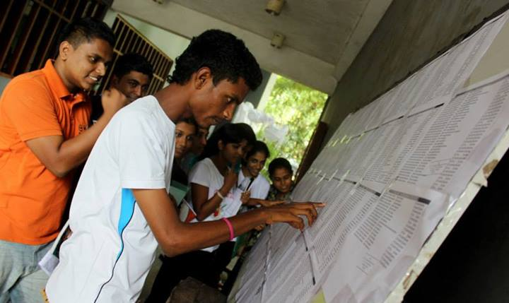

Courses
The University of Sri Jayewardenepura conducts the courses to students who have gained admission to the university, These students are selected based on their performance at the General Certificate of Education (Advanced Level) examination. They are admitted to 3 or 4 years full time degree programmes. All the expenses to conduct these courses are met by the government under the Free Education policy. The general expenditure of the University of Sri Jayewardenepura is around 7.8 million rupees per day.
In addition, according to the resources and facilities available in different faculties and considering the current national and global requirements of the country, the university offers Certificate and Postgraduate Diplomas, M.A., M.Sc., M Phil, and PhD, programmes. Most of these courses cater to employed graduates and are conducted on a part time basis. These courses are fee-levying courses. Research relevant to postgraduate Degree are conducted in the university or in outside organizations. A postgraduate Degrees are conducted by the Faculty of Graduate Studies. Different courses conducted by the university and their duration are as follows:
Faculty of Humanities & Social Sciences
Faculty of Management Studies & Commerce
Faculty of Applied Sciences
Faculty of Medical Sciences
Faculty of Technology
Faculty of Engineering

First Degree Courses
Faculty of Humanities & Social Sciences